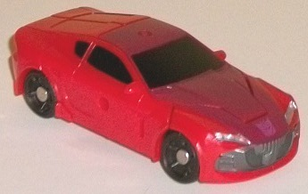
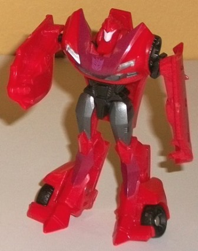
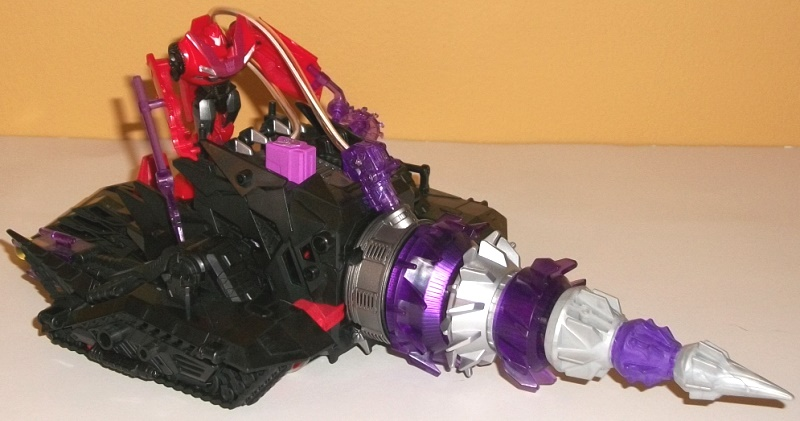
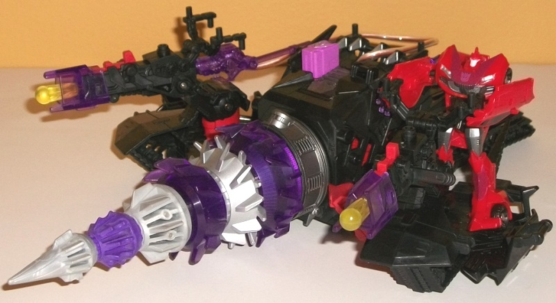

Allegiance:
Decepticon
Size:
Cyberverse Vehicle Set
Difficulty of Transformation to Robot
:
Very Easy
Difficulty of Transformation of Vehicle
:
Very Easy
Color Scheme:
Red, black, transparent
dark purple, and some dark dull glossy fuschia, light milky gray, silver,
metallic gunmetal gray, transparent yellow, dark purple, and off-white
Figure Rating
: 7.1
Vehicle-Base Rating
: 7.6


Knock Out's car mode,
proportions-wise, is very on-model with the show, and there's no robot
mode extras sticking out of his car mode whatsoever. His mold detailing
is also quite accurate to the show and the Prime aesthetic, being fairly
minimal (particularly since he's a sleek sportscar) with a few areas of
more intense detailing, like his grill. Unfortunately, where Knock Out
falls short here is with his paint apps. His color scheme of red and black
with some gunmetal gray (such as on his front grill, and silver on his
headlights) is accurate, along with a rather dirty, dull-looking shade
of fuschia that makes up a cone from his front grill to halfway down his
roof (and ends rather abruptly; I would have preferred a spray-fade). What
is NOT accurate is the complete lack of yellow, which is what makes his
color scheme pop on the show! I'm not sure why Hasbro is so keen on leaving
out the most important accent in Knock Out's scheme, but it makes his car
mode look far from the super-stylish paint job it's supposed to have. To
add insult to injury, his rear windows aren't painted, and neither are
his rear bumper or taillights-- weak. In terms of holes for Cyberverse-scaled
weapons, in this mode he has one in the center of his roof, as well as
one on the side of each car door.
Knock Out's transformation
is pretty straightforward even for a Legion class figure, and thus leaves
him with a fairly standard robot mode, in terms of what parts go where.
I like how accurate they managed to get his chest and shoulders (with the
shoulders on a rotating hinge that brings them up besides the wheels),
though his chest is a bit large proportionally in comparison to his head.
His arms aren't ideal, being merely molded onto the insides of his car
side door pieces, but it's about what you'd expect at this small of a size.
Also, as is usual with Legion car figures, there's a bit of a backpack
made up of his roof, but it stays flat against his back and largely out
of the way of movement, so I don't mind it much. What I do find odd are
his legs-- they're molded in an odd position where they go forward at the
hips, but a bit too far backwards at the knees (the knees cannot move).
Thanks to the pieces of car on the sides of his pointy feet, he's still
stable, but it makes him look a bit more awkward in this mode than he should
have been otherwise. The addition of a bit more gunmetal gray on his legs,
black on his well-detailed waist, and white on his face sculpt (which is
spot-on to the show, complete with a smirk) makes the color breakup in
this mode better than in vehicle mode, though he still could REALLY use
some yellow. For articulation, he can move at the shoulders, hips, and
ankles-- not a whole lot, but the former two are on ball joints, so he
has a bit wider range of motion than you'd think from that short description.
Knock Out also is able to hold two additional Cyberverse-scaled weapons
in his hands, in addition to having his aforementioned vehicle peg-holes
accessible on the sides of his arms and his back.


The Energon Driller
has two modes: a "driller" and a "base", though they aren't very different
at all. First, the driller mode, which is quite accurate to how they look
in the show when various random Vehicon drones are riding them. The main
feature of the vehicle is a long drill in the front, with the front couple
of sections being made of rubbery plastic for safety purpose, and the larger
parts being transparent plastic, with one section painted a pretty nice
coat of silver. The back half of the vehicle is a very angular, treated
vehicle in the typical Prime Decepticon design aesthetic, and almost entirely
black-- which is a shame, as there's a lot of really intricate mold detailing
to be picked out, particularly with all the tread detailing on the bottom
(which really should've been painted silver). That said, the overall color
scheme of black, purple, and silver is certainly Decepticon-y, and the
basic colors do look nicely together. There's a driver's area behind the
middle section for a Cyberverse-scaled figure to stand, with handles perfectly
designed for their fist holes. There's also a few accessories designed
specifically for Knock Out that he or any other Cyberverse-scaled figure
can use; namely, transparent purple versions of both his buzzsaw and electric-poker
weapons he's seen with in the show. When not in use, they can peg into
any one of the many Cyberverse-scaled ports all over the driller. The main
gimmick in this toy is that if you press down on the pinkish-purple Decepticon
button on the top, a red LED light will come on in the small purple accessory
attached by a translucent wire to it. If plugged into the base of the drill
where its default position is, it's supposed to light up the drill; but
as is usual with this gimmick, it doesn't work that well. At least it lights
up the FIRST section of the drill, which is better than most implementations
of it in the 2012 Prime line, at least. There's also Cyberverse-scaled
pegs and holes on the light-up piece, so you can have Knock Out or another
character use it to light up a weapon (or a Commander-class figure-- at
least in theory, it doesn't really work in practice). The coolest gimmick
about this mode is that if you roll it back and forth, the drill rotates
in a pretty fast manner, and looks pretty nifty doing so.
Pressing back on the
large red tab near the front of the mode reveals the Driller's "base mode",
which is really just the driller mode with two additional missile pod sections
opening out on the sides, each with a large enough space to hold another
Cyberverse figure and with handles on the missile blasters for the figures
to hold. There's even more Cyberverse-scaled holes and ports that pop out
in this mode, so you can really pump up the driller with all sorts of little
weapons if you want to. Each missile launcher is spring-loaded, and can
fire prettty far-- however, the triggers can be rather touchy to the point
of being a slight annoyance. On the color side, a bit more red is revealed
in this mode, along with transparent yellow projectiles, which bring a
bit more color to the toy, though not where it really needs it (on the
back end). Also, unfortnately, the rolling-drill gimmick doesn't work in
this mode.
The Knock Out driller set is middle-of-the-road for me when it comes to the 2012 Cyberverse vehicle sets. The Knock Out figure is a bit below-average for a Legion class toy; nothing on it particularly stands out as being innovative, either, and Knock Out's color scheme isn't complete, but he's only a portion of why you're buying this package. The driller itself has a pretty nice-looking vehicle mode (even if more paint on the back end really could've brought out its detailing), but the drill-spinning gimmick on it is mighty cool. There's also tons of ports and handles for interaction with other Cyberverse toys, two spring-loaded launchers, and it can be connected to other Cyberverse "base modes" to form a large playset. I wish its two modes were a little more different from each other, and that the light gimmick actually worked well, so it's not a perfect package by any means, but the more Cyberverse figures you have, the more fun this little set can be. Mildly recommended.
Review by Beastbot